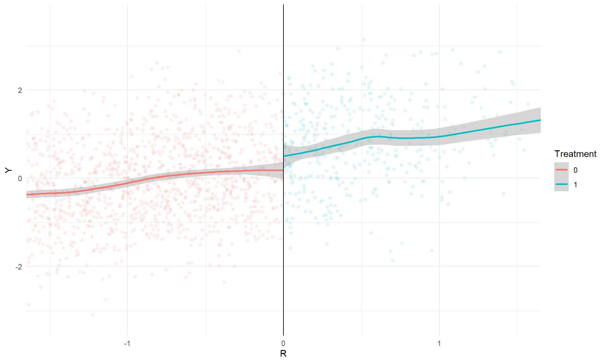
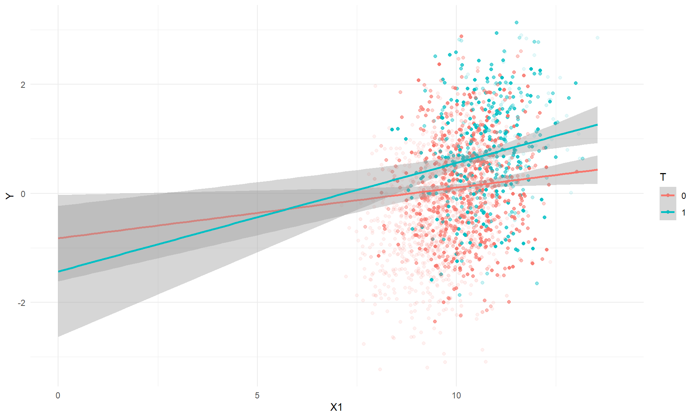

NOTE (2019-09-24): This post pertains to version 0.56 of the rdd package. The problems described in this post have been corrected in version 0.57 of the package, which was posted to CRAN on 2016-03-14.
The rdd package in R provides a set of methods for analysis of regression discontinuity designs (RDDs), including methods to estimate marginal average treatment effects by local linear regression. I was working with the package recently and obtained some rather counter-intuitive treatment effect estimates in a sharp RDD model. After digging around a bit, I found that my perplexing results were the result of a subtle issue of model specification. Namely, in models with additional covariates (beyond just the running variable, treatment indicator, and interaction), the main estimation function in rdd uses a specification in which covariates are always interacted with the treatment indicator. In this post, I’ll demonstrate the issue and comment on potential work-arounds.
A simulated example
To make things more concrete, here’s a hypothetical RDD. I’ll use \(R\) to denote the running variable, with the threshold set at zero; \(T\) for the treatment indicator; and \(Y\) for the outcome. \(X_1\) is a continuous covariate that is correlated with \(R\). \(X_2\) is a categorical covariate with four levels that is independent of \(X_1\) and \(R\). In order to illustrate the issue with covariate-by-treatment interactions, I use a model in which the effect of the treatment varies with \(R\), \(X_1\), and \(X_2\):
Code
set.seed(20160124)simulate_RDD <-function(n =2000, R =rnorm(n, mean =qnorm(.2))) { n <-length(R) T <-as.integer(R >0) X1 <-10+0.6* (R -qnorm(.2)) +rnorm(n, sd =sqrt(1-0.6^2)) X2 <-sample(LETTERS[1:4], n, replace =TRUE, prob =c(0.2, 0.3, 0.35, 0.15)) Y0 <-0.4* R +0.1* (X1 -10) +c(A =0, B =0.30, C =0.40, D =0.55)[X2] +rnorm(n, sd =0.9) Y1 <-0.35+0.3* R +0.18* (X1 -10) +c(A =-0.50, B =0.30, C =0.20, D =0.60)[X2] +rnorm(n, sd =0.9) Y <- (1- T) * Y0 + T * Y1data.frame(R, T, X1, X2, Y0, Y1, Y)}RD_data <-simulate_RDD(n =2000)
Simple RDD analysis
The main estimand in a sharp RDD is the marginal average treatment effect (MATE)—that is, the average effect of treatment assignment for units right at/near the threshold of eligibility. Even though I simulated a treatment response surface that depends on the covariates \(X_1,X_2\), it is not necessary to control for them in order to identify the MATE. Rather, it is sufficient to use a local linear regression of the outcome on the running variable, treatment indicator, and their interaction:
Typically, this regression is estimated using the observations within a certain bandwidth of the threshold, and using weights defined on the basis of some kernel. The default in the rdd package is to use a triangular edge kernel, with bandwidth chosen using a formula proposed by Imbens and Kalyanaraman. The following code uses rdd to estimate the MATE without controlling for covariates:
Code
library(rdd)bw <-with(RD_data, IKbandwidth(R, Y, cutpoint =0))rdd_simple <-RDestimate(Y ~ R, data = RD_data, cutpoint =0, bw = bw)summary(rdd_simple)
Using a bandwidth of 1.09, the estimated marginal average treatment effect is 0.303. The figure below illustrates the discontinuity:

RDD with covariates
In practice, it is quite common for analysts to include additional covariates in the model specification. Doing so is not necessary for treatment effect identification, but can be useful for purposes of improving precision. For example, Cortes, Goodman, and Nomi (2015) use an RDD to estimate the effects of assigning low-performing 9th graders to double-dose algebra. Their main specifications include controls for student gender, race/ethnicity, free/reduced-price lunch status, etc. In the analysis that I’m working on, the data come from students nested within multiple schools, and so it seems sensible to include fixed effects for each school. There’s a direct analogy here to simple randomized experiments: the basic difference in means provides a randomization-unbiased estimate of the sample average treatment effect, but in practice it can be awfully useful to use an estimate from a model with additional covariates.
Returning to my simulated example, the following table reports the estimates generated by RDestimate when controlling for neither, one, or both covariates.
Code
RD_est <-function(mod, covariates) { RD_fit <-RDestimate(as.formula(paste(mod, covariates)), data = RD_data, cutpoint =0)with(RD_fit, c(est = est[[1]], se = se[1], p = p[1]))}covariates <-list("No covariates"="","X1 only"="| X1","X2 only"="| X2","X1 + X2"="| X1 + X2")library(plyr)ldply(covariates, RD_est, mod ="Y ~ R", .id ="Specification")
Specification est se p
1 No covariates 0.3034839 0.1132266 0.007355079
2 X1 only -0.6861864 0.8077039 0.395574210
3 X2 only -0.2269958 0.1626996 0.162960539
4 X1 + X2 -1.2529313 0.7315106 0.086749345
Despite using identical bandwidths, the estimates are drastically different from each other, with standard errors that are much larger than for the simple estimate without covariates.
What’s going on?
It is known that introducing covariates into an RDD analysis should have little effect on the MATE estimate (see, e.g., Lee and Lemieux, 2010). It is therefore quite perplexing that the estimates in my example (and in the real study I was analyzing) were so sensitive. It turns out that this puzzling behavior arises because, for sharp RDDs only, RDestimate always interacts the covariate(s) with the treatment indicator. Here is the relevant section of the function:
Code
body(RDestimate)[[39]][[4]][[7]][[3]][[3]]
if (!is.null(covs)) {
data <- data.frame(Y, Tr, Xl, Xr, covs, w)
form <- as.formula(paste("Y~Tr+Xl+Xr+", paste("Tr*", names(covs),
collapse = "+", sep = ""), sep = ""))
} else {
data <- data.frame(Y, Tr, Xl, Xr, w)
form <- as.formula(Y ~ Tr + Xl + Xr)
}
For a generic covariate \(X\), the function uses the specification:
while still taking \(\beta_2\) to represent the MATE. This is problematic because, as soon as the \(X_i T_i\) term is introduced into the model, \(\beta_2\) represents the difference between treated and untreated units at the threshold (where \(R_i = 0\)) and where \(X_i = 0\). Thus, including the \(X_1\) interaction in the model means that \(\beta_2\) is a difference extrapolated way outside the support of the data, as in the following scatterplot of the outcome versus the covariate \(X_1\):

RDestimate returns as the MATE estimate the difference between the regression lines when \(X_1 = 0\), which in this example is -0.69. Similarly, including the \(X_2\) interaction in the model means that \(\beta_2\) will represent the marginal average treatment effect for only one of the categories of \(X_2\), rather than as some sort of average across all four categories.
What to do about this
If you’ve been using the rdd package to analyze your data, I can think of a couple of ways to handle this issue, depending on whether you want to use a model that interacts the covariates with the treatment indicator. Here are some options:
First, suppose that you want to estimate a model that does NOT include covariate-by-treatment interactions. The most transparent (and thus probably safest) approach is to do the estimation “by hand,” so to speak. Specifically, Use the rdd package to get kernel weights, but then estimate the outcome model using plain-old lm. Here’s an example:
Code
library(sandwich)library(lmtest)RD_data$wt <-kernelwts(RD_data$R, center =0, bw = bw)MATE_model <-lm(Y ~ R + T + R * T + X1 + X2, weights = wt, data =subset(RD_data, wt >0))coeftest(MATE_model, vcov. =vcovHC(MATE_model, type ="HC1"))
By default, RDestimate uses the HC1 variant of heteroskedasticity-robust standard errors. To exactly replicate its behavior, I used coeftest from the lmtest package, combined with vcovHC from the sandwich package. Note that it is also necessary to estimate the model based on the subset of observations with positive weight (otherwise the sandwich standard errors will misbehave).
An alternative to the first approach is to “trick” RDestimate into using the desired model specification by using 2SLS estimation with \(T\) instrumenting itself. Because the function does not use covariate-by-treatment interactions for “fuzzy” RDDs, you get the correct model specification:
Code
summary(RDestimate(Y ~ R + T| X1 + X2, data = RD_data, cutpoint =0))
Call:
RDestimate(formula = Y ~ R + T | X1 + X2, data = RD_data, cutpoint = 0)
Type:
fuzzy
Estimates:
Bandwidth Observations Estimate Std. Error z value Pr(>|z|)
LATE 1.0894 1177 0.2923 0.10769 2.714 0.006644 **
Half-BW 0.5447 611 0.2041 0.14911 1.369 0.171103
Double-BW 2.1787 1832 0.2703 0.08447 3.200 0.001374 **
---
Signif. codes: 0 '***' 0.001 '**' 0.01 '*' 0.05 '.' 0.1 ' ' 1
F-statistics:
F Num. DoF Denom. DoF p
LATE 31.24 7 1169 7.490e-40
Half-BW 13.84 7 603 1.110e-16
Double-BW 68.36 7 1824 7.919e-88
The results based on the first bandwidth agree with the results from lm.
Now, suppose that you DO want to retain the covariate-by-treatment interactions in the model, while also estimating the MATE. To do this, you can use what I call “the centering trick,” which entails centering each covariate at the sample average (in this case, the locally-weighted sample average). For a generic covariate \(X\), let
The coefficient on \(T\) now corresponds to the MATE. Here’s R code that implements this approach:
Code
covariate_mat <-model.matrix(~ X1 + X2, data = RD_data)[,-1]covariate_cent <-apply(covariate_mat, 2, function(x) x -weighted.mean(x, w = RD_data$wt))RD_data <-data.frame(subset(RD_data, select =c(R, Y, T)), covariate_cent)covariates_cent <-list("No covariates"="","X1 only"="| X1","X2 only"="| X2B + X2C + X2D","X1 + X2"="| X1 + X2B + X2C + X2D")ldply(covariates_cent, RD_est, mod ="Y ~ R", .id ="Specification")
Specification est se p
1 No covariates 0.3034839 0.1132266 0.007355079
2 X1 only 0.2913246 0.1125398 0.009635680
3 X2 only 0.3107688 0.1071302 0.003721488
4 X1 + X2 0.2981428 0.1065888 0.005155864
The estimates are now insensitive to the inclusion of the (properly centered) covariates, just as in the no-interactions model. In this example, the standard errors from the model that includes covariate-by-treatment interactions are just ever so slightly smaller than those from the model without interactions.
Why does this third approach work? I’ll explain more in a later post…
@online{pustejovsky2016,
author = {Pustejovsky, James E.},
title = {Regression Discontinuities with Covariate Interactions in the
Rdd Package},
date = {2016-01-25},
url = {https://mellifluous-buttercream-e2edd2.netlify.app/posts/rdd-interactions},
langid = {en}
}
---title: Regression discontinuities with covariate interactions in the rdd packagedate: '2016-01-25'categories:- econometrics- Rstats- causal inference- regression discontinuitycode-tools: truedate-modified: '2019-09-24'---__*NOTE (2019-09-24): This post pertains to version 0.56 of the `rdd` package. The problems described in this post have been corrected in version 0.57 of the package, which was posted to CRAN on 2016-03-14.*__```{r, include = FALSE}install.packages("https://cran.r-project.org/src/contrib/Archive/rdd/rdd_0.56.tar.gz", repo = NULL)```The [`rdd` package](https://cran.r-project.org/web/packages/rdd/) in R provides a set of methods for analysis of regression discontinuity designs (RDDs), including methods to estimate marginal average treatment effects by local linear regression. I was working with the package recently and obtained some rather counter-intuitive treatment effect estimates in a sharp RDD model. After digging around a bit, I found that my perplexing results were the result of a subtle issue of model specification. Namely, in models with additional covariates (beyond just the running variable, treatment indicator, and interaction), the main estimation function in `rdd` uses a specification in which covariates are always interacted with the treatment indicator. In this post, I'll demonstrate the issue and comment on potential work-arounds. ### A simulated exampleTo make things more concrete, here's a hypothetical RDD. I'll use $R$ to denote the running variable, with the threshold set at zero; $T$ for the treatment indicator; and $Y$ for the outcome. $X_1$ is a continuous covariate that is correlated with $R$. $X_2$ is a categorical covariate with four levels that is independent of $X_1$ and $R$. In order to illustrate the issue with covariate-by-treatment interactions, I use a model in which the effect of the treatment varies with $R$, $X_1$, and $X_2$: ```{r}set.seed(20160124)simulate_RDD <-function(n =2000, R =rnorm(n, mean =qnorm(.2))) { n <-length(R) T <-as.integer(R >0) X1 <-10+0.6* (R -qnorm(.2)) +rnorm(n, sd =sqrt(1-0.6^2)) X2 <-sample(LETTERS[1:4], n, replace =TRUE, prob =c(0.2, 0.3, 0.35, 0.15)) Y0 <-0.4* R +0.1* (X1 -10) +c(A =0, B =0.30, C =0.40, D =0.55)[X2] +rnorm(n, sd =0.9) Y1 <-0.35+0.3* R +0.18* (X1 -10) +c(A =-0.50, B =0.30, C =0.20, D =0.60)[X2] +rnorm(n, sd =0.9) Y <- (1- T) * Y0 + T * Y1data.frame(R, T, X1, X2, Y0, Y1, Y)}RD_data <-simulate_RDD(n =2000)```### Simple RDD analysisThe main estimand in a sharp RDD is the marginal average treatment effect (MATE)---that is, the average effect of treatment assignment for units right at/near the threshold of eligibility. Even though I simulated a treatment response surface that depends on the covariates $X_1,X_2$, it is not necessary to control for them in order to identify the MATE. Rather, it is sufficient to use a local linear regression of the outcome on the running variable, treatment indicator, and their interaction:$$Y_i = \beta_0 + \beta_1 R_i + \beta_2 T_i + \beta_3 R_i T_i + \epsilon_i$$Typically, this regression is estimated using the observations within a certain bandwidth of the threshold, and using weights defined on the basis of some kernel. The default in the `rdd` package is to use a triangular edge kernel, with bandwidth chosen using a formula proposed by Imbens and Kalyanaraman. The following code uses `rdd` to estimate the MATE without controlling for covariates:```{r, message=FALSE}library(rdd)bw <- with(RD_data, IKbandwidth(R, Y, cutpoint = 0))rdd_simple <- RDestimate(Y ~ R, data = RD_data, cutpoint = 0, bw = bw)summary(rdd_simple)```Using a bandwidth of `{r} round(bw, 2)`, the estimated marginal average treatment effect is `{r} round(rdd_simple$est[["LATE"]], 3)`. The figure below illustrates the discontinuity:```{r, echo = FALSE, fig.width = 10, fig.height = 6}library(ggplot2)ggplot(RD_data, aes(R, Y, color = factor(T))) + geom_point(alpha = 0.1) + geom_smooth(method = "loess") + geom_vline(xintercept = 0) + theme_minimal() + coord_cartesian(xlim = c(-1.5,1.5)) + labs(color = "Treatment")```### RDD with covariatesIn practice, it is quite common for analysts to include additional covariates in the model specification. Doing so is not necessary for treatment effect identification, but can be useful for purposes of improving precision. For example, [Cortes, Goodman, and Nomi (2015)](http://doi.org/10.3368/jhr.50.1.108) use an RDD to estimate the effects of assigning low-performing 9th graders to double-dose algebra. Their main specifications include controls for student gender, race/ethnicity, free/reduced-price lunch status, etc. In the analysis that I'm working on, the data come from students nested within multiple schools, and so it seems sensible to include fixed effects for each school. There's a direct analogy here to simple randomized experiments: the basic difference in means provides a randomization-unbiased estimate of the sample average treatment effect, but in practice it can be awfully useful to use an estimate from a model with additional covariates. Returning to my simulated example, the following table reports the estimates generated by `RDestimate` when controlling for neither, one, or both covariates. ```{r, message=FALSE}RD_est <- function(mod, covariates) { RD_fit <- RDestimate(as.formula(paste(mod, covariates)), data = RD_data, cutpoint = 0) with(RD_fit, c(est = est[[1]], se = se[1], p = p[1]))}covariates <- list("No covariates" = "", "X1 only" = "| X1", "X2 only" = "| X2", "X1 + X2" = "| X1 + X2")library(plyr)ldply(covariates, RD_est, mod = "Y ~ R", .id = "Specification")```Despite using identical bandwidths, the estimates are drastically different from each other, with standard errors that are much larger than for the simple estimate without covariates. ### What's going on?It is known that introducing covariates into an RDD analysis should have little effect on the MATE estimate (see, e.g., [Lee and Lemieux, 2010](http://doi.org/10.1257/jel.48.2.281)). It is therefore quite perplexing that the estimates in my example (and in the real study I was analyzing) were so sensitive. It turns out that this puzzling behavior arises because, for sharp RDDs only, `RDestimate` always interacts the covariate(s) with the treatment indicator. Here is the relevant section of the function: ```{r}body(RDestimate)[[39]][[4]][[7]][[3]][[3]]```For a generic covariate $X$, the function uses the specification:$$Y_i = \beta_0 + \beta_1 R_i + \beta_2 T_i + \beta_3 R_i T_i + \beta_4 X_i + \beta_5 X_i T_i + \epsilon_i, $$while still taking $\beta_2$ to represent the MATE. This is problematic because, as soon as the $X_i T_i$ term is introduced into the model, $\beta_2$ represents the difference between treated and untreated units at the threshold (where $R_i = 0$) and where $X_i = 0$. Thus, including the $X_1$ interaction in the model means that $\beta_2$ is a difference extrapolated _way_ outside the support of the data, as in the following scatterplot of the outcome versus the covariate $X_1$:```{r, echo = FALSE, fig.width = 10, fig.height = 6}RD_data$w <- kernelwts(RD_data$R, center = 0, bw = bw)blank_dat <- within(RD_data, {X1 <- 0})ggplot(RD_data, aes(X1, Y, color = factor(T), weight = w)) + geom_point(aes(alpha = w)) + geom_smooth(method = "lm", fullrange = TRUE) + geom_blank(data = blank_dat) + coord_cartesian(xlim = c(0,14)) + labs(x = "X1", y = "Y", color = "T") + scale_alpha_continuous(guide = FALSE) + theme_minimal()````RDestimate` returns as the MATE estimate the difference between the regression lines when $X_1 = 0$, which in this example is `{r} round(RD_est(mod = "Y ~ R", covariates = covariates[[2]])[["est"]], 2)`. Similarly, including the $X_2$ interaction in the model means that $\beta_2$ will represent the marginal average treatment effect for only one of the categories of $X_2$, rather than as some sort of average across all four categories. ### What to do about thisIf you've been using the `rdd` package to analyze your data, I can think of a couple of ways to handle this issue, depending on whether you want to use a model that interacts the covariates with the treatment indicator. Here are some options:First, suppose that you want to estimate a model that does NOT include covariate-by-treatment interactions. The most transparent (and thus probably safest) approach is to do the estimation "by hand," so to speak. Specifically, Use the `rdd` package to get kernel weights, but then estimate the outcome model using plain-old `lm`. Here's an example:```{r}library(sandwich)library(lmtest)RD_data$wt <-kernelwts(RD_data$R, center =0, bw = bw)MATE_model <-lm(Y ~ R + T + R * T + X1 + X2, weights = wt, data =subset(RD_data, wt >0))coeftest(MATE_model, vcov. =vcovHC(MATE_model, type ="HC1"))```By default, `RDestimate` uses the HC1 variant of heteroskedasticity-robust standard errors. To exactly replicate its behavior, I used `coeftest` from the `lmtest` package, combined with `vcovHC` from the `sandwich` package. Note that it is also necessary to estimate the model based on the subset of observations with positive weight (otherwise the sandwich standard errors will misbehave).An alternative to the first approach is to "trick" `RDestimate` into using the desired model specification by using 2SLS estimation with $T$ instrumenting itself. Because the function does not use covariate-by-treatment interactions for "fuzzy" RDDs, you get the correct model specification:```{r}summary(RDestimate(Y ~ R + T| X1 + X2, data = RD_data, cutpoint =0))```The results based on the first bandwidth agree with the results from `lm`.Now, suppose that you DO want to retain the covariate-by-treatment interactions in the model, while also estimating the MATE. To do this, you can use what I call "the centering trick," which entails centering each covariate at the sample average (in this case, the locally-weighted sample average). For a generic covariate $X$, let $$\bar{x} = \frac{\sum_{i=1}^n w_i X_i}{\sum_{i=1}^n w_i},$$where $w_i$ is the kernel weight for unit $i$. Then estimate the model$$Y_i = \beta_0 + \beta_1 R_i + \beta_2 T_i + \beta_3 R_i T_i + \beta_4 \left(X_i - \bar{x}\right) + \beta_5 \left(X_i - \bar{x}\right) T_i + \epsilon_i, $$The coefficient on $T$ now corresponds to the MATE. Here's R code that implements this approach:```{r}covariate_mat <-model.matrix(~ X1 + X2, data = RD_data)[,-1]covariate_cent <-apply(covariate_mat, 2, function(x) x -weighted.mean(x, w = RD_data$wt))RD_data <-data.frame(subset(RD_data, select =c(R, Y, T)), covariate_cent)covariates_cent <-list("No covariates"="","X1 only"="| X1","X2 only"="| X2B + X2C + X2D","X1 + X2"="| X1 + X2B + X2C + X2D")ldply(covariates_cent, RD_est, mod ="Y ~ R", .id ="Specification")```The estimates are now insensitive to the inclusion of the (properly centered) covariates, just as in the no-interactions model. In this example, the standard errors from the model that includes covariate-by-treatment interactions are just ever so slightly smaller than those from the model without interactions. Why does this third approach work? I'll explain more in [a later post](/posts/rdd-interactions-again/)...